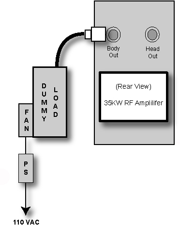

| NOTE: | If the RF Amplifier at the site is a 25 kW / 35 kW MKS version with an LCD display on the front, connect the dummy load directly to J4 because an RF coupler is not required for this amplifier. (See Illustration 5.) |
Illustration 5: Dummy Load into J4 Body Output on MKS Version
